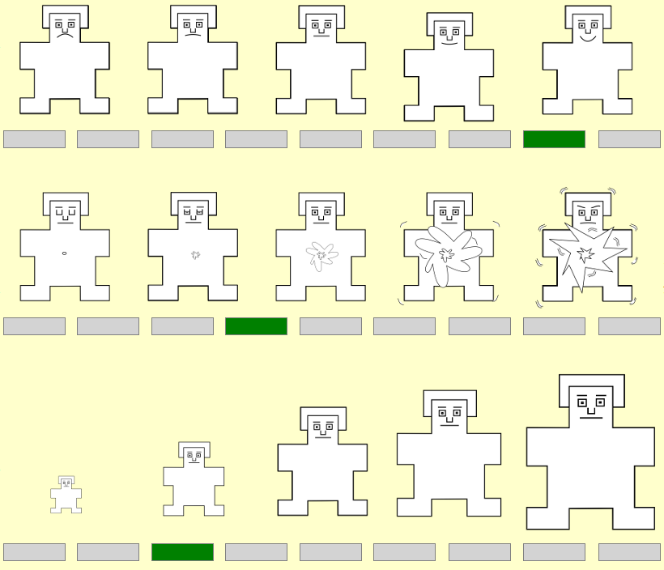

Welcome!
Thank you for particpating in this survey. The aim of the study is to investigate whether there is a difference in how people react emotionally to different types of words, depending on the professional context. The study is open to IT professionals, including programmers, project managers, testers, analysts, architects and designers.
During the study you will be asked to assess the emotions posed by the words, as if they occurred in bug tracking systems, commits' descriptions or comments in the source code of the application. The survey should take no more than 15 minutes.
The emotions evaluation will be conducted using SAM figures. SAM shows three different kinds of feelings: Happy vs. Unhappy (top), Excited vs. Calm (middle), and Controlled vs. In-control (bottom). You will use make all 3 ratings for each word that you read.
Please notice that each of the three feelings are arrayed along a different scale. The top panel shows the happy-unhappy scale, which ranges from a smile to a frown. At one extreme of this scale, you are happy, pleased, satisfied, contented, hopeful. When you feel completely happy you should indicate this by selecting rectangle below the figure at the right. The other end of the scale is when you feel completely unhappy, annoyed, unsatisfied, melancholic, despaired, or bored. You can indicate feeling completely unhappy by selecting rectangle below the figure at the left. The figures also allow you to describe intermediate feelings of pleasure, by selecting rectangle below any of the other pictures. If you feel completely neutral, neither happy nor sad, select rectangle below the figure in the middle (point to middle SAM figure). There are a total of 9 possible rectangles along each rating scale that you can select in to indicate the extent to which you felt happy or unhappy.
The middle panel shows the excited or calm scale. At one extreme of this scale you are stimulated, excited, frenzied, jittery, wide-awake, or aroused. At the other end of the excited-calm scale, which is the completely opposite feeling. Here you would feel completely relaxed, calm, sluggish, dull, sleepy, or unaroused. If you are not excited nor at all calm, select in the figure in the middle of the row.
Finally, the bottom scale shows whether you felt controlled or in control. At one end of the scale (left) you have feelings characterized as completely controlled, influenced, cared-for, awed, submissive, or guided. The opposite end of this scale indicates wheather you feel completely in control, influential, important, dominant, autonomous, or controlling. Note that when the figure is large, you feel in control, and that it will be very small when you feel controlled.
Please work at a rapid place and don’t spend too much time thinking about each word. Rather, make your ratings based on your first and immediate reaction as you read each word. However keep in mind to assess words as if they occurred in bug tracking systems, commits' descriptions or comments in the source code
There are 50 words to be assessed, however, you can finish the survey at any time simply by pressing "Finish" button. If you do not understand a given word, press "Skip" button.
At the beginnig of the survey you will be asked to fill in two demographic questions.